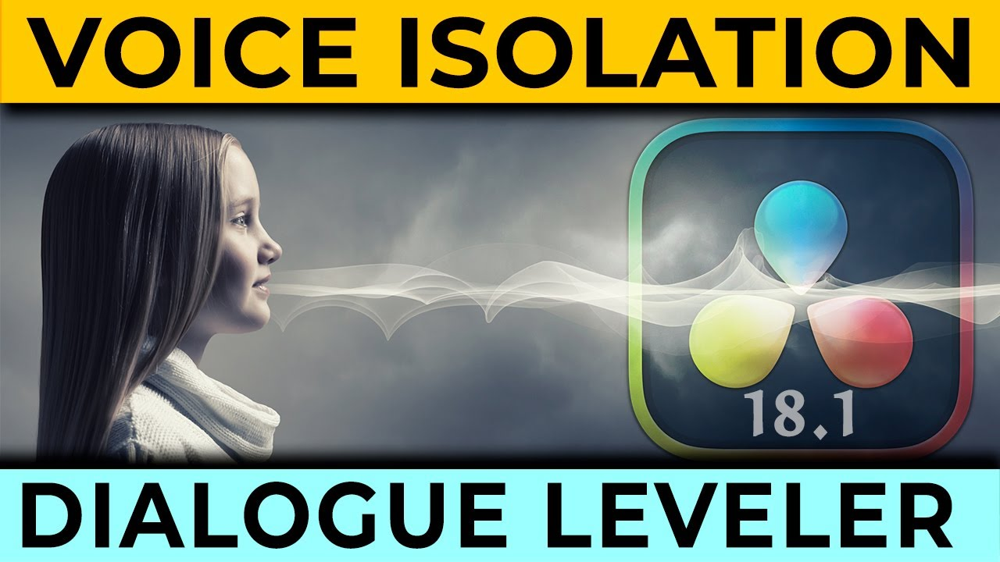
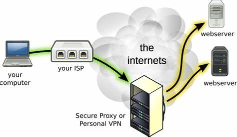
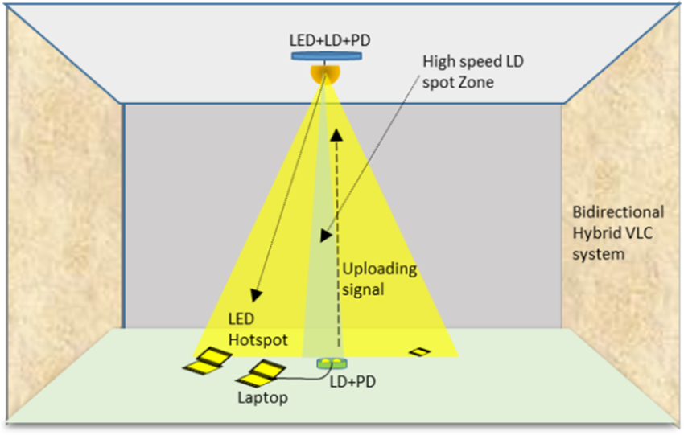

Projects
Project 1: AI-Driven Quality Enhancement

Developed an AI model for process parameter optimization to enhance product quality.
Project 2: Voice Isolation
Developed signal processing scripts to isolate vocal/non-vocal audio components.
Project 3: Personal VPN over TOR using AWS
Configured and deployed a secure VPN system.
Project 4: LED-Based VLC Protocol Security
Achieved secure data transmission using visible light for modern wireless communication systems.